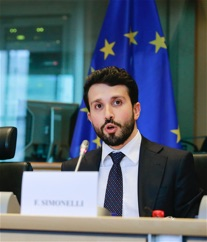

Felice Simonelli, PhD / Brussels
Making EU policy work as intended.
Since 2009 I have evaluated laws and policies for the European Commission and the European Parliament. My fields are better regulation, the green and digital transition, research and innovation and industrial competitiveness.

Associate Senior Research Fellow, CEPS
Profile
I work on a wide range of EU policy areas: better regulation and industrial policy, research and innovation, the digital economy, energy and climate, sustainability, energy-intensive industries, global competitiveness, taxation and trade.
Since March 2021 I have been part of the European Affairs team of Cassa Depositi e Prestiti (CDP), focusing on the green and digital transitions, industrial competitiveness, research and innovation, and better regulation.
At CEPS I was Head of Policy Evaluation until 2021, and I remain an Associate Senior Research Fellow. From 2013 I managed research and consultancy projects for the European Commission and the European Parliament, coordinated framework contracts with many Directorates-General, and ran data collection, interviews, surveys and stakeholder consultations across EU countries. From 2018 to 2021 I also led the CEPS Project Development Team.
I hold a PhD in Law and Economics from LUISS University, an LL.M. cum laude in Law and Economics from Erasmus University Rotterdam and Ghent University, and an M.Sc. and a Bachelor, both cum laude, from LUISS. I am a native Italian speaker, fluent in English and Neapolitan.
Career
- 2021–European Affairs teamCassa Depositi e Prestiti
- 2021–Associate Senior Research FellowCEPS, pro bono
- 2013–2021Head of Policy EvaluationCEPS, Brussels
- 2014–2016Research FellowItalian Space Agency
- 2012Visiting PhD studentBuchmann Faculty of Law, Tel Aviv University
- 2011Visiting ResearcherBerkeley Law, University of California
- 2009–2021Associate ResearcherGRIF “Fabio Gobbo”, LUISS University, Rome
Framework contracts coordinated for CEPS
- DG GROW
- DG ECFIN
- DG TAXUD
- DG TRADE
- DG CNECT
- DG ENV
- DG RTD
- EASME
- SRSS / DG REFORM
- European Parliament: EPRS, ITRE, IMCO
Selected projects and publications
Filter by theme or year, or search for a client, a co-author or a keyword.
Projects Publications
Contact
Glad to meet you in Brussels. For studies, evaluations or a conversation about EU policy, write to me directly.
- Felice Simonelli
- Office
- Brussels, Belgium
- Languages
- Italian, English, Neapolitan